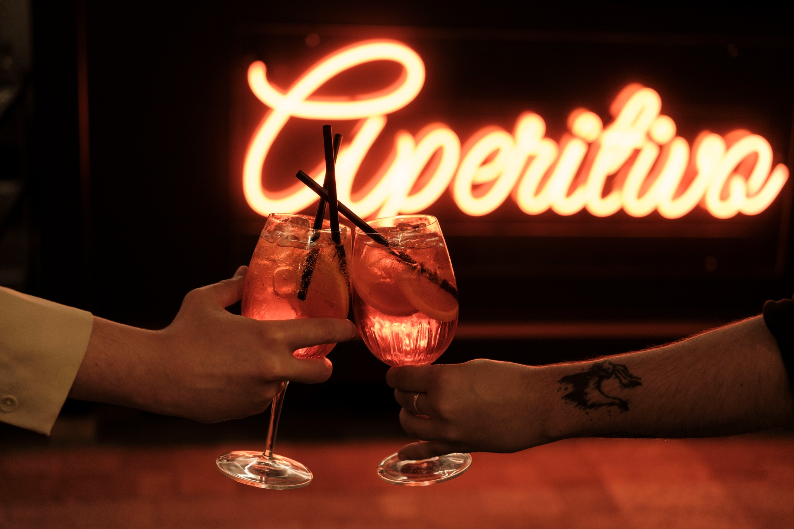
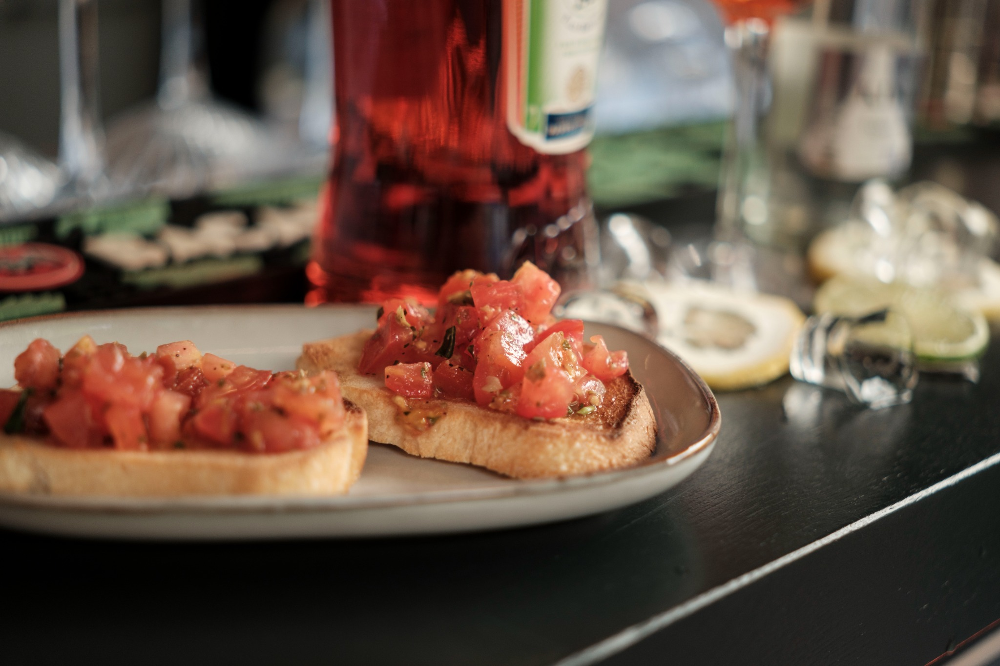
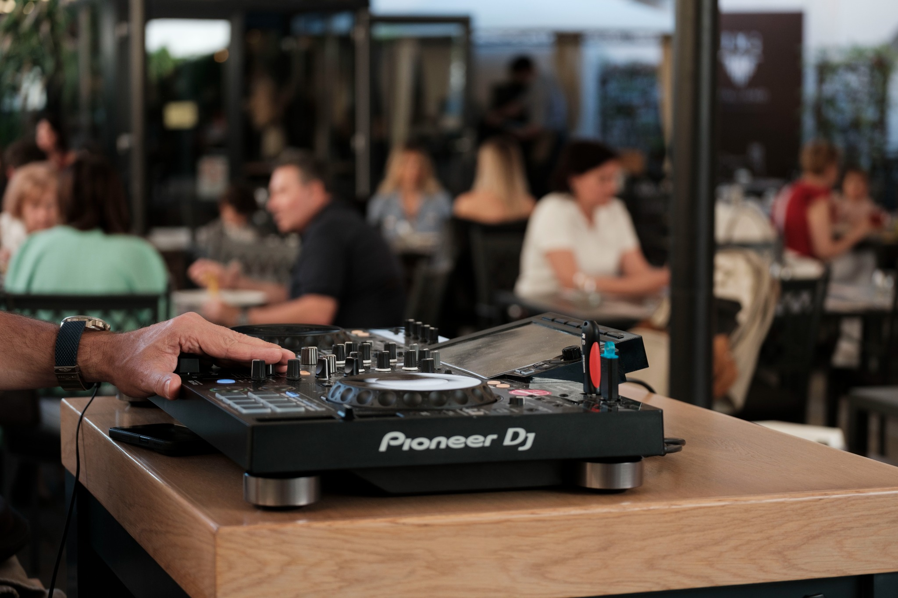
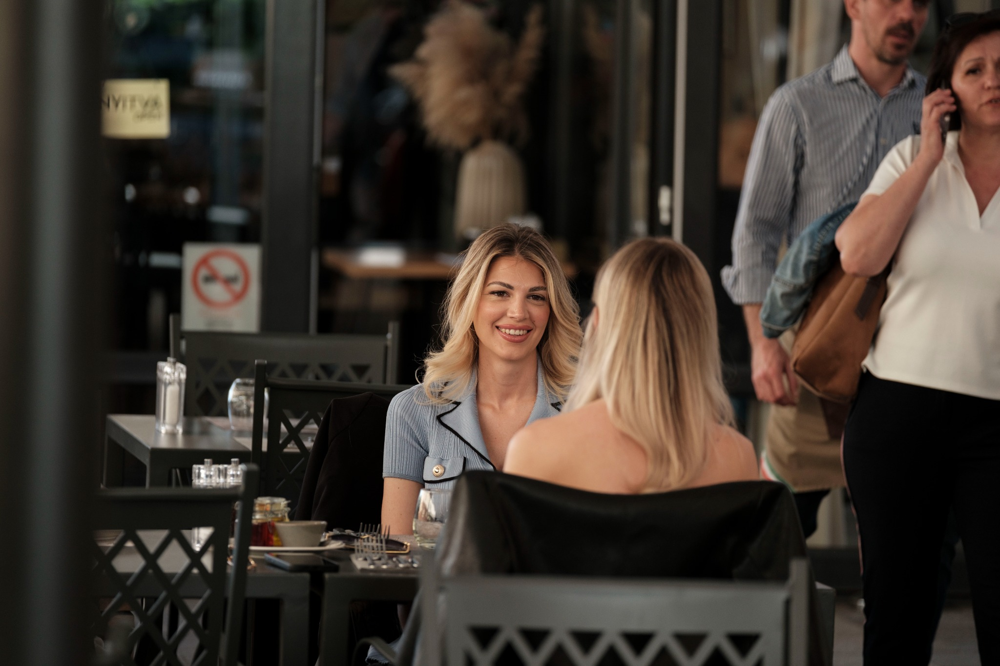
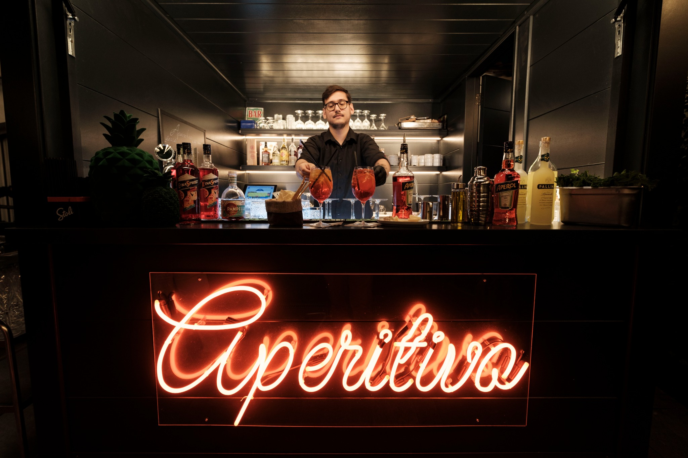
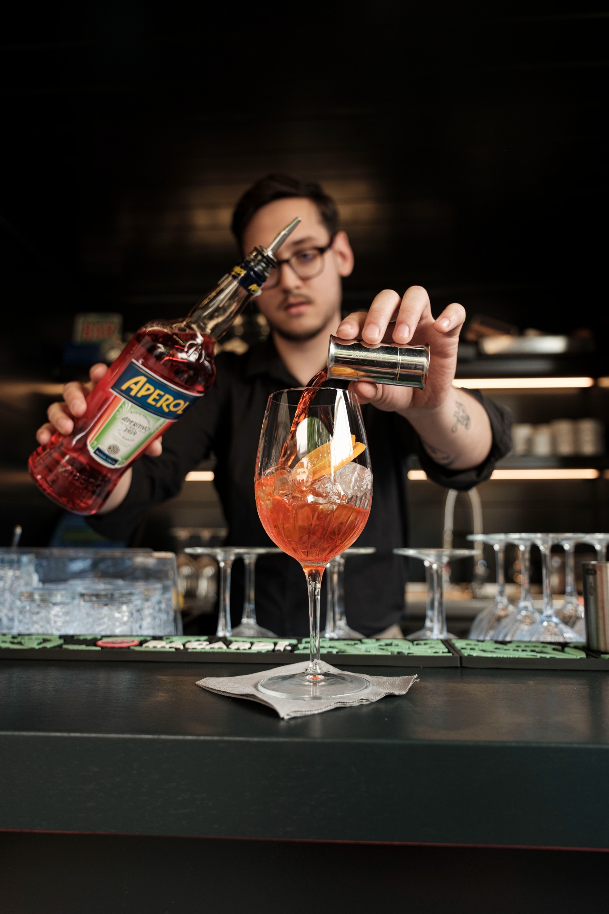
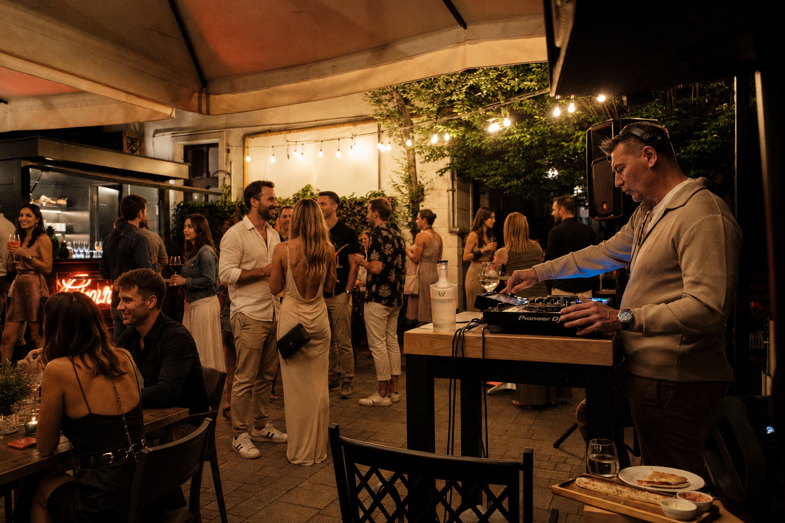

Koktélok és spritzek
Aperol Spritz, frissítő nyári koktélok és könnyed italok a teraszon.
Debrecen új nyári törzshelye
Egy külön világ a DG Italiano teraszán: frissítő koktélok, olasz snackek, könnyed zenék és az az érzés, mintha egy estére Nápoly egyik rejtett kerthelyiségébe csöppennél.
Aperitivo feeling
Az Aperitivo by DG Italiano a dél-olasz szabadtéri életérzést hozza el Debrecenbe: egy hely, ahol a nap lassabban megy le, a poharak összekoccannak, a zene finoman kíséri az estét, és minden találkozásból lehet egy kis nyaralás.
Spritz. Zene. Terasz. Olasz vibe.
Amit nálunk találsz
Aperol Spritz, frissítő nyári koktélok és könnyed italok a teraszon.
Bruschetták, sajttálak és aperitivo falatok, amelyek tökéletesen illenek az estéhez.
DJ estek és hangulatos zenei aláfestés, nem túl sok, éppen annyi, hogy meglegyen az olasz nyár ritmusa.



Péntek & szombat
Pénteken és szombaton délutántól késő estig vár az Aperitivo: lazulós kezdés, frissítő italok, olasz falatok, majd estére érkező zene és könnyed mediterrán pezsgés.

Nyitvatartás
Érkezz egy könnyed délutáni spritzre, vagy maradj estére a zenés teraszhangulatért.
Galéria



Itt találsz meg minket
Az Aperitivo by DG Italiano a DG Italiano teraszán vár, könnyen megközelíthető helyen, Debrecen szívében.
Koktél, zene, terasz, dél-olasz életérzés — az Aperitivo by DG Italiano vár pénteken és szombaton.
Vissza az elejére